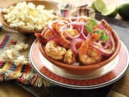

Ceviche

Ingredients
- 2 pounds of cooked shrimp
- 2 red onions sliced very thinly
- 4 tomatoes sliced very thinly or diced
- 1 bell pepper red or green
- 10-15 limes freshly squeezed
- The juice of 1 orange
- ½ cup of ketchup or ½ cup of freshly blended tomato juice for a fresher style ceviche
- 1 bunch of cilantro chopped
Preparation
Soak the onion slices in salt water for about 10 minutes, rinse well and drain.
Mix all the ingredients together in large bowl and let it sit in the fridge for 1 to 2 hours.
Serve with chifles (fried green banana or green plantain chips) or patacones (thick fried green plantains).